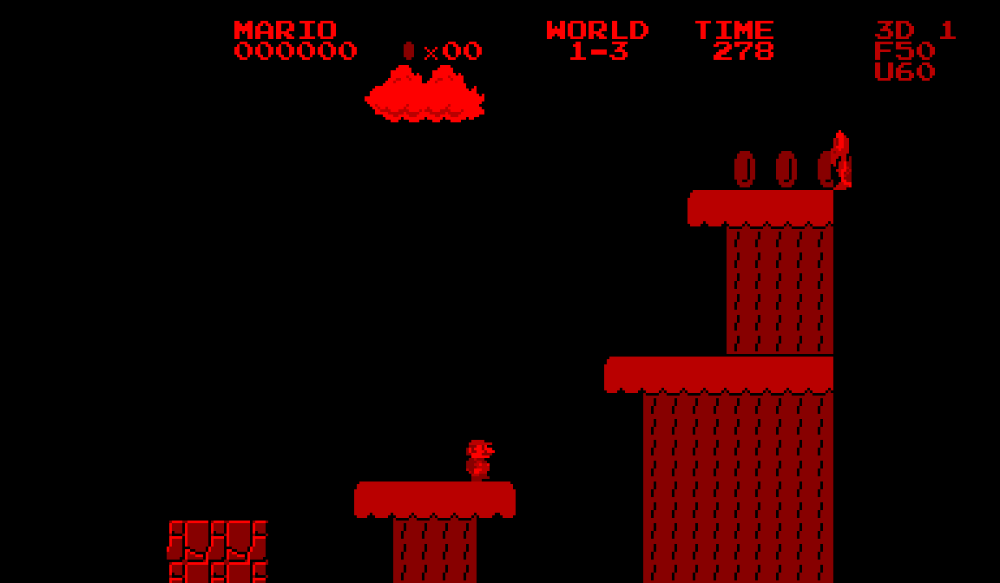
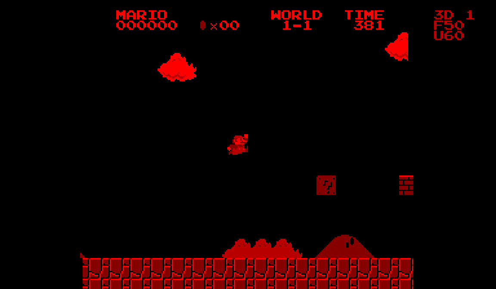
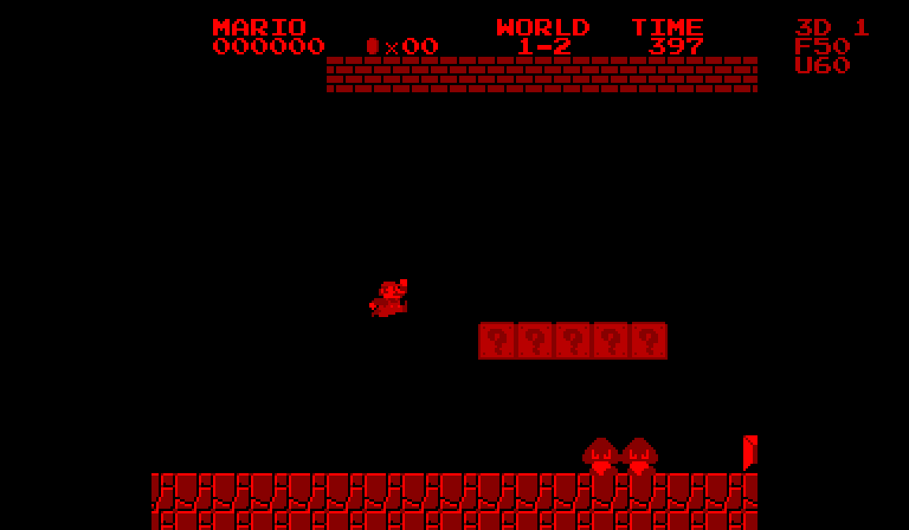
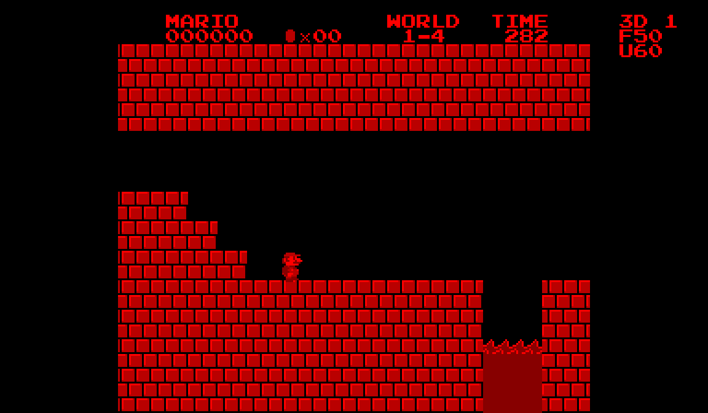
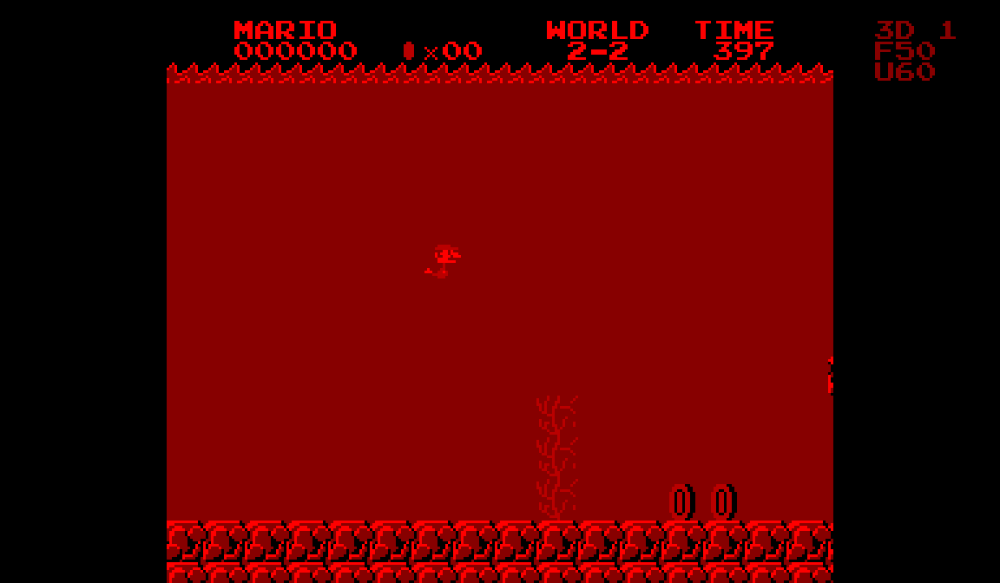
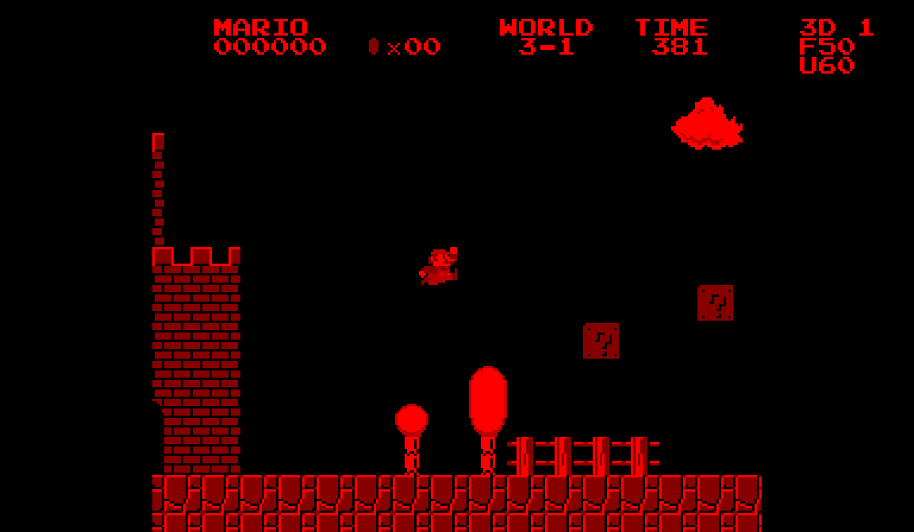
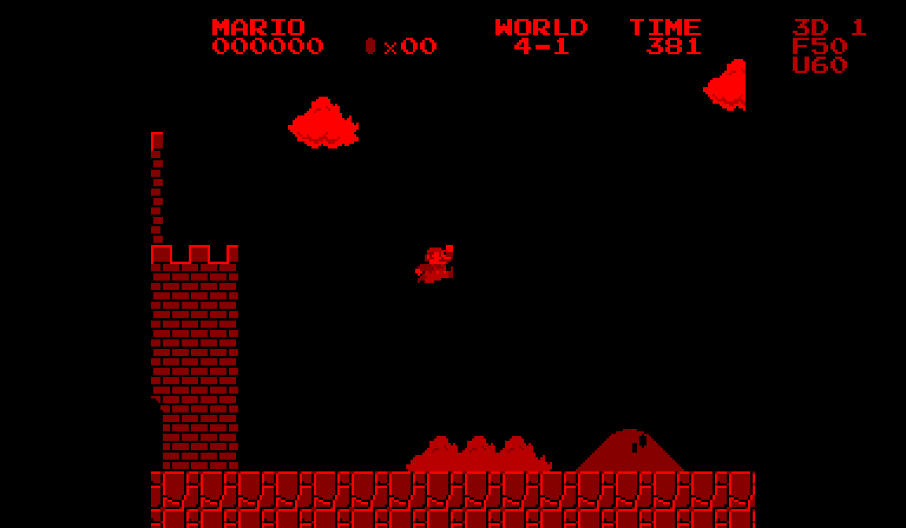
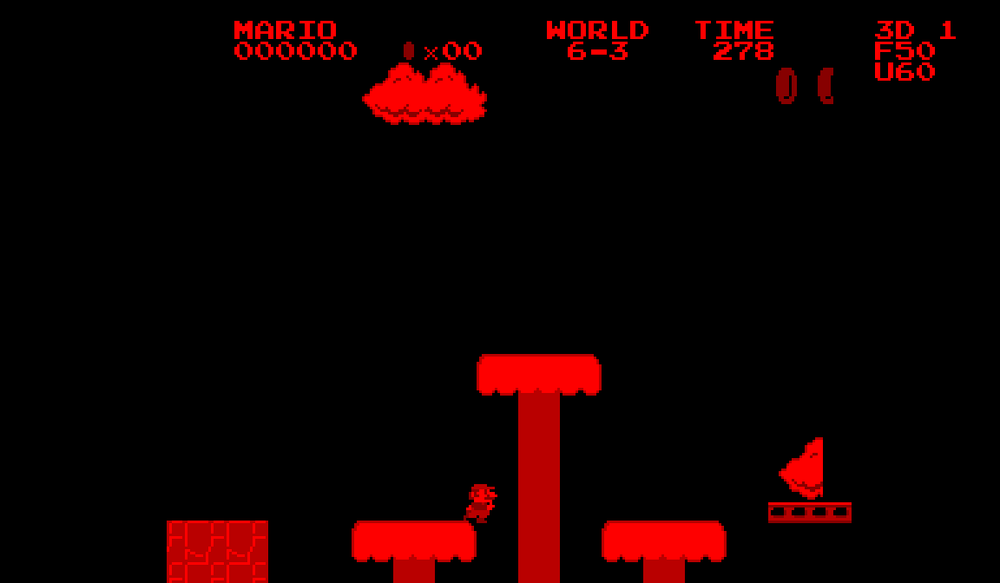
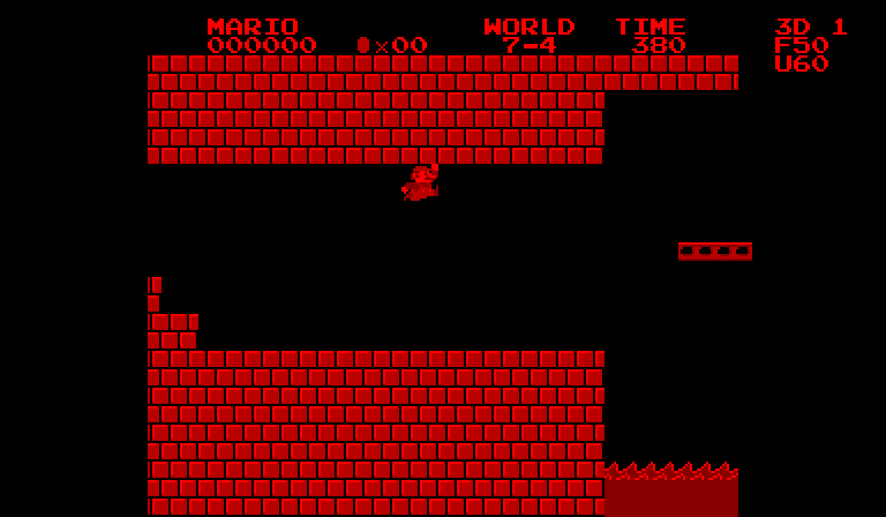
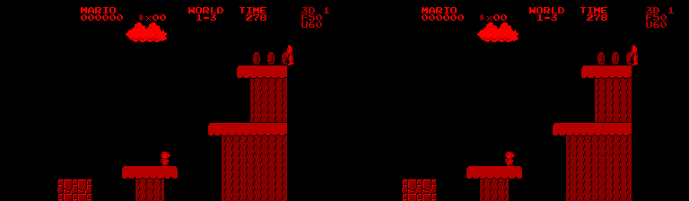

{kind=link}
{kind=link}
{kind=link}
{kind=link}
{kind=link}
{kind=link}
{kind=link}
{kind=link}
{kind=link}
Built for the V810
The game runs as a native Virtual Boy executable, adapting the SMB Vanilla C gameplay reconstruction. The cartridge uses the console’s VIP graphics hardware and fits into a 256 KiB ROM.
SUPER MARIO BROS. / VIRTUAL BOY
The Mushroom Kingdom, through a different pair of eyes. SMB1 Stereo brings the familiar adventure to Virtual Boy with layered stereoscopic scenery, native hardware audio and a striking red-and-black world.
Explore the worlds ↗
THE ADVENTURE YOU KNOW
Run, jump, collect coins and explore the original two-dimensional level layouts. The port carries the game’s familiar worlds onto Virtual Boy: bright overworlds, underground passages, treetop platforms, water stages and castles.
The collision plane stays familiar. The scenery gains depth.
Clouds recede into the distance. Hills and bushes sit nearer. Mario and the platforms remain together, while the HUD floats in front.A TOUR OF THE WORLDS
Nine locations across six worlds, captured from the actual Virtual Boy cartridge in Beetle VB. Open any image for the full-size view.

The Mushroom KingdomWORLD 1–1Familiar terrain, rebuilt in red.

Below the surfaceWORLD 1–2Brick corridors and underground atmosphere.
Above the treetopsWORLD 1–3Elevated platforms against layered scenery.

Inside the castleWORLD 1–4Lava, masonry and a darker mood.

UnderwaterWORLD 2–2Swimming through the submerged world.

After darkWORLD 3–1The overworld under a night sky.

Lakitu countryWORLD 4–1Clouds and open skies in World 4.

High-altitude platformsWORLD 6–3Pale treetops and precarious jumps.

Castle labyrinthWORLD 7–4Late-game castle architecture.
Gallery scenes use the development harness to start individual levels for photography. These are emulator screenshots, not evidence of completing the pictured stages. Capture details ↗
MADE FOR VIRTUAL BOY
The game runs as a native Virtual Boy executable, adapting the SMB Vanilla C gameplay reconstruction. The cartridge uses the console’s VIP graphics hardware and fits into a 256 KiB ROM.
Separate depths for clouds, hills and bushes, the gameplay plane and the HUD create stereoscopic separation. Choose depth 0 for a flat image, or settings 1–3 for increasing depth.
Music and effects are translated into Virtual Boy VSU pulse, triangle and noise equivalents. The sound comes from the cartridge itself; it is an adaptation rather than an exact NES APU emulation.
The V3 revision separates gameplay timing from drawing, targeting 60 game updates per second. Inactive map banks and protected display swaps address earlier display problems.
The original 256-pixel playfield is centered within each 384 × 224 eye view. This paired frame shows the actual left and right renderings at the default depth setting.

Keyboard mappings for the bundled Windows Mednafen launcher.
| Action | Keyboard | Virtual Boy |
|---|---|---|
| Move / enter pipes | Arrow keys | Left D-pad |
| Jump / swim | X | A |
| Run / fire | Z | B |
| Start / pause | Enter | Start |
| Select players | Right Shift | Select |
| Adjust depth | Page Up / Down | Right D-pad ↑ / ↓ |
This is the first playable port, with the V3 speed fix. All 32 stages have passed the project’s level-loading and rendering checks. The recorded gameplay demo additionally verifies completion of World 1-1. Those checks do not establish that the entire campaign is completable.
V3 still needs confirmation on physical Virtual Boy hardware. Earlier revisions showed display and speed problems during hardware testing. Monochrome palettes, eight cropped overscan lines at the top and bottom, and translated VSU sound differ from the NES presentation.
The supplied Windows package includes Mednafen launchers for a normal screen, red/cyan glasses and side-by-side stereo. A compatible Virtual Boy emulator or flash cartridge loads smb1-vb.vb.
Port and capture documentation · Component credits · Gameplay verification
SEE IT IN MOTION
A continuous look at the port in action, with native game audio. Choose a single-eye view for a regular screen or compare both eye views side by side. The demo clears World 1-1 via the underground pipe route.
This 45-second demo uses timed controller inputs and loses no lives. The side-by-side version preserves both eye views. Pixel scaling uses nearest-neighbor sampling. No artificial stereo, generated gameplay or interpolated frames.
SOURCES & ACKNOWLEDGMENTS
Super Mario Bros. © Nintendo. Unofficial personal conversion; no affiliation or endorsement. This showcase distributes footage and documentation, not the game ROM or extracted game assets.
{kind=link}